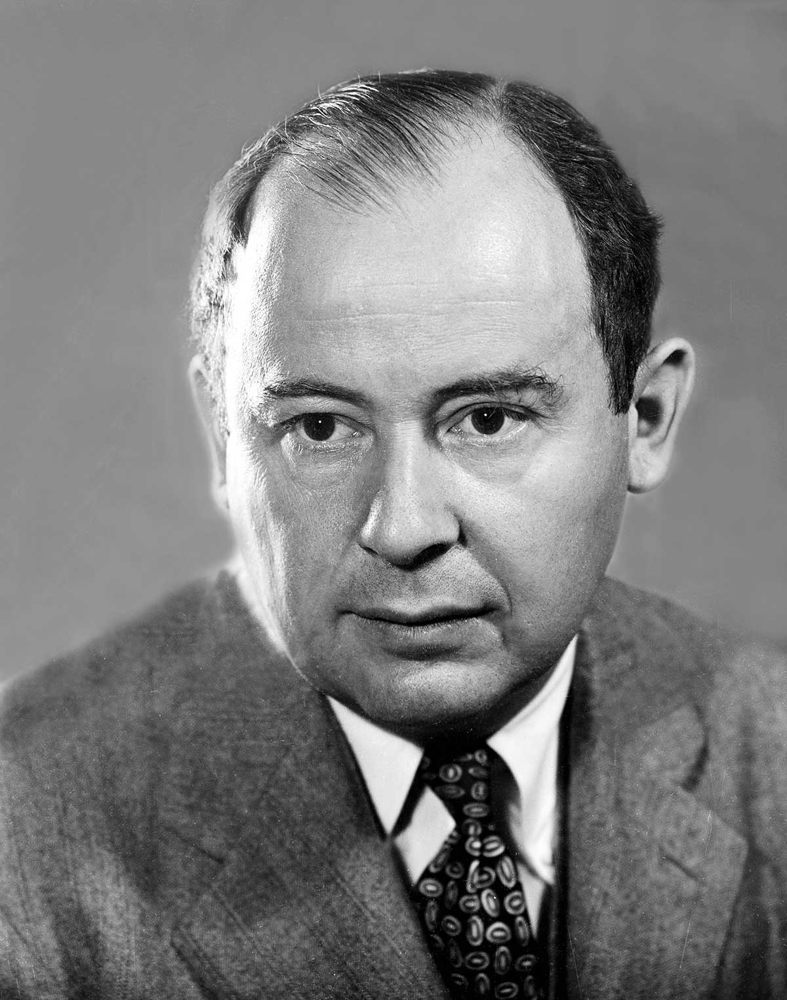

Lesson 1
The origins of Life
Cellular automata

- It is made up of a collection of cells.
- The cells live on a 2D grid — like a chessboard, but extending infinitely in all directions.
- Each cell has one of two states (e.g., dead or alive, 0 or 1, off or on) at any one point in time.
- Each cell has a neighborhood of cells adjacent to it.
The picture below demonstrates what a cellular automaton may look like.

Knowledge check
Before we move on, let’s make sure that we have the four basic components of a cellular automaton down. Use the flashcards below to test your knowledge.
Rules for change
The state of an automaton evolves over time, just like how the state of a game of chess or checkers changes with each player’s move. But rather than being determined by the calculations of two opposing players, the next state of an automaton is determined according to a set of rules that change the state of each cell according to the states of its neighbors.
Let’s look at an example.
Knowledge check
Rule 1B: A cell dies if 4 or fewer of its neighbors are alive.
For each automaton below, will the red cell be dead or alive in the next generation?
Question 1
Question 2
Question 3
As we will soon see, different rules can produce drastically different results. The magic of Life lies in how one defines these rules.